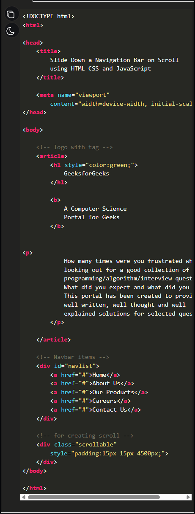
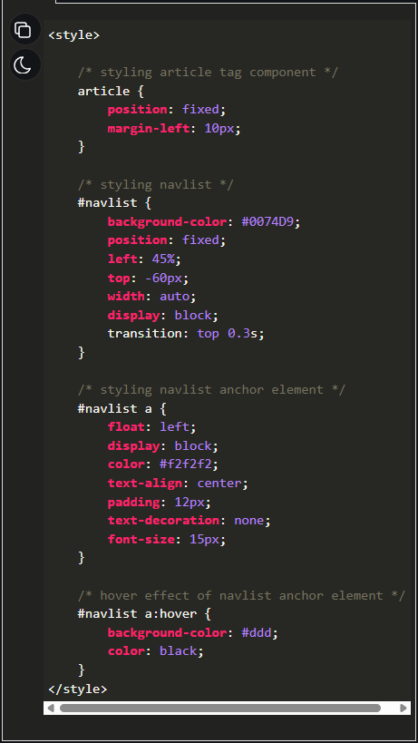

HTML code to make the structure:
Creating Structure: In this section, we will create a basic website structure for the slide down navbar when the user scrolls down the page it will display the effect.

CSS code to look good the structure:
Designing Structure: In the previous section, we have created the structure of the basic website. In this section, we will design the structure for the navigation bar and then scroll down the effect on the navbar using JavaScript.
